EMERALD
Emerald is a precious gemstone and a variety of the mineral beryl, coloured green by trace amounts of chromium and sometimes vanadium. Beryl has a hardness of 7.5-8 on the Mohs scale. Most emeralds are highly included, so their toughness (resistance to breakage) is classified as generally poor. Emeralds, like all coloured gemstones, are graded using four basic parameters -- the four C’s of connoisseurship: colour, clarity, cut, and carat weight.

Emeralds in antiquity were mined in Egypt at locations on Mount Smaragdus since 1500 BCE, and in India and Austria since at least the 14th century CE. The Egyptian mines were exploited on an industrial scale by the Roman and Byzantine Empires, and later by Islamic conquerors. Mining ceased with the discovery of the Columbian deposits, now only ruins remain. Colombia is by far the world’s largest producer of emeralds with Zambia coming in as the world’s second biggest producer. Emeralds are found all over the world in countries such as Afghanistan, Australia, Austria, Brazil, Bulgaria, Cambodia, Canada, China, Egypt, Ethiopia, France, Germany, India, Italy, Kazakhstan, Madagascar, Mozambique, Namibia, Nigeria, Norway, Pakistan, Russia, Somalia, South Africa, Spain, Switzerland, Tanzania, the United States, Zambia, and Zimbabwe.


KNOWN ASSOCIATES
In this collection, emeralds appear with onyx and diamonds, typically in a platinum setting.
 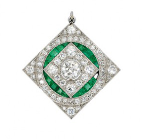
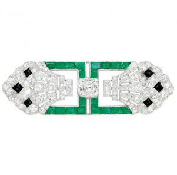
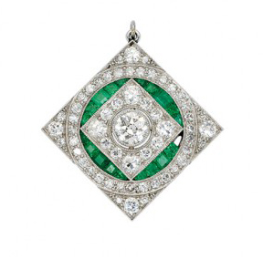
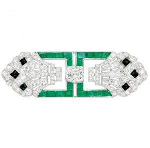

 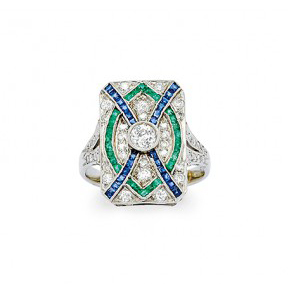
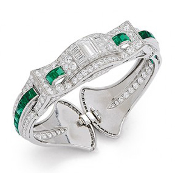
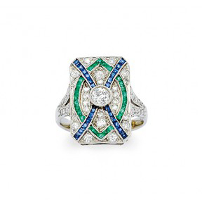
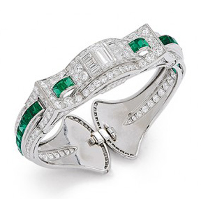
 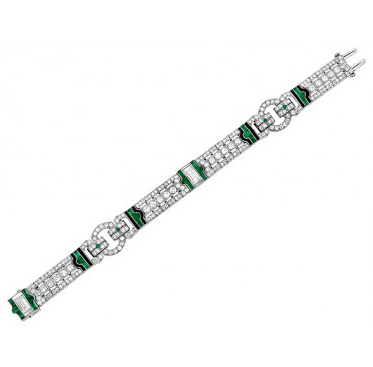
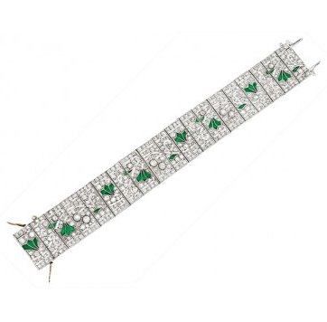
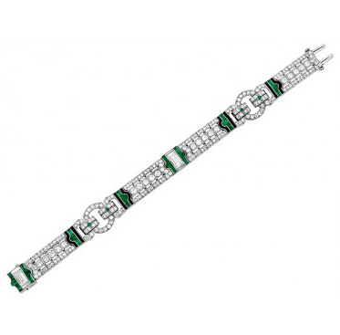
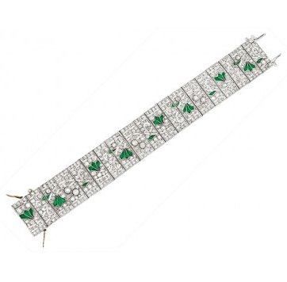
SEEN IN
Emeralds appear fairly frequently in this collection alongside large pieces of jade. The art deco era was one known for its use of strong, solid colours and the frequent use of emeralds is a testament to that.